| ResponseId | mean.acc | mean.self | AGE | GENDER | EDUCATION | ETHNICITY | SHIPLEY | HLVA | FACTOR3 | NATIVE.LANGUAGE | study |
|---|---|---|---|---|---|---|---|---|---|---|---|
| R_1lcaBAGJNNI2kju | 1.00 | 7.6 | 18 | Female | Further | White | 31 | 10 | 48 | English | PSYC122 |
| R_AG4jiTm8oxmuOOZ | 0.90 | 7.6 | 18 | Female | Further | White | 35 | 10 | 40 | English | PSYC122 |
| R_2Ckb6YXLPGwYSvg | 0.95 | 7.2 | 18 | Male | Further | Asian | 35 | 9 | 47 | Other | PSYC122 |
| R_27JY5xHHcMs7jGi | 0.90 | 6.8 | 18 | Female | Further | White | 35 | 8 | 52 | English | PSYC122 |
| R_1DtJ4mrOXmxre01 | 0.85 | 6.4 | 19 | Female | Further | White | 33 | 9 | 41 | English | PSYC122 |
| R_PRFQFInzSS6T8e5 | 0.90 | 6.2 | 19 | Female | Further | Mixed | 36 | 5 | 52 | English | PSYC122 |
Week 10. Developing the linear model
Written by Rob Davies
10.1 Overview
Welcome to your overview of the work we will do together in Week 10.
This week, we focus on strengthening your ability to apply the linear model approach to a wider range of research questions.
In the context of the Clearly understood project, we frame our analysis concerns and methods in relation to example research questions, including the question:
- What person attributes predict success in understanding?
This is to help you to learn to think critically about what it is you want to do with linear models when you use them, or when you read about their results in research reports.
It will be seen that, to answer research questions like this example question, we will need to think about how we analyze data when multiple different predictor variables could be included in our model.
Most of the time, in your future professional work, when you use linear models you will be trying to predict outcomes (behaviours, person attributes) given information from multiple different predictor variables at once.
You will be able to do this work using what you learn this week.
As students, now, learning how to move from analyses involving one outcome and one predictor variable, to analyses involving one outcome and multiple outcome variables unlocks a much wider range of contexts in which you can apply the skills and understanding you develop here to address research problems and questions of your own.
Tip
We encounter linear models with multiple predictors, often, as multiple regression or regression analyses. The difference in names in different fields disguises the fact that we are working with the same technique: multiple regressions are linear models.
10.2 Our learning goals
We will learn how to:
- Skills – extend our capacity to code models so that we can incorporate multiple predictors;
- Concepts – develop the critical thinking processes required to make decisions about what predictors to include in your model;
- Concepts and skills – learn how to critically evaluate results, given variation between samples.
We will revise how to:
- Skills – identify and interpret model statistics;
- Concepts and skills – critically evaluate the results;
- Concepts and skills – communicate the results.
As we progress, we will continue to strengthen your skills in building professional visualizations. This week, we will learn how to exploit professional tools to automatically generate and plot model predictions, when previously we produced model predictions by hand.
10.3 Learning resources
You will see, next, the lectures we share to explain the concepts you will learn about, and the practical data analysis skills you will develop. Then you will see information about the practical materials you can use to build and practise your skills.
Every week, you will learn best if you first watch the lectures then do the practical exercises.
Linked resources
- In the chapter for week 7, we share materials to support your development of critical thinking about associations, and your development of practical skills in working with correlation-based analyses.
- In the chapter for week 8, we introduce you to the main ideas and practical steps involved in conducting linear model analyses.
10.3.1 Lectures
The lecture materials for this week are presented in four short parts.
Click on a link and your browser should open a tab showing the Panopto video for the lecture part.
- Part 1 (20 minutes) Developing the linear model: The concepts and skills we will learn about in week 10: our aims, the research questions we can answer with linear models, making the move to working with linear models with multiple predictors, why the main challenge is not the coding but the choices over which predictors to include in a model.
- Part 2 (13 minutes): Coding, thinking about, and reporting linear models with multiple predictors.
- Part 3 (21 minutes): Critically evaluating the results of analyses involving linear models.
- Part 4 (19 minutes): The linear model is very flexible, powerful and general.
10.3.2 Lecture slides
Download the lecture slides
The slides presented in the videos can be downloaded here:
- The slides exactly as presented (11 MB).
You can download the web page .html file and click on it to open it in any browser (e.g., Chrome, Edge or Safari). The slide images are high quality so the file is quite big and may take a few seconds to download.
We are going to work through some practical exercises, next, to develop your critical thinking and practical skills for working with linear models.
10.4 Practical materials: data and R-Studio
We will work with one data file which you can download by clicking on its name (below):
Once you have downloaded the file, you will need to upload it to the R-Studio server to access it so that you can do the practical exercises.
Important
Here is a link to the sign-in page for R-Studio Server
10.4.1 Practical materials guide
As usual, you will find that the practical exercises are simpler to do if you follow these steps in order.
- The data — We will take a quick look at what is inside the data files so you know what everything means.
- The
how-toguide — We will go through the practical analysis and visualization coding steps, showing all the code required for each step. - The
practicalexercises — We will set out the tasks, questions and challenges that you should complete to learn the practical skills we target this week.
This week — Week 10 — we aim to further develop skills in working with the linear model, and in visualizing and testing the associations between variables in psychological data.
- While we build on everything you have learned so far, the skills you learn in this class unlock your capacity to analyse most kinds of data you will encounter in most situations: a big expansion in the scope of your capacities.
Week 10 parts
- Set-up
- Load the data
- Revision: using a linear model to answer research questions – one predictor.
- New: using a linear model to answer research questions – multiple predictors.
- New: plot predictions from linear models with multiple predictors.
- New: estimate the effects of factors as well as numeric variables.
- New: examine associations comparing data from different samples.
We learn these skills so that we can answer research questions like:
- What person attributes predict success in understanding?
Questions like this are often answered by analyzing psychological data using some form of linear model.
As usual, when we do these analyses, we need to think about how we report the results, so part of the learning you will complete will enable you to:
- report information about the kind of model you specify;
- report the nature of the associations (or effects) estimated in your model;
- evaluate the results, making decisions about (i.) the significance of effects (ii.) whether estimates of effects suggest a positive or negative relationship between outcome and predictor (iii.) whether estimates of effects suggest a strong or a weak relationship.
We will really strengthen your ability to produce professional visualizations by learning how to translate model results into plots that help you and your audience to translate what your model tells you into accurate understanding and plain language.
10.4.1.1 The data files
Each of the data files we have worked with has had a similar structure. This week, that continuity remains. But, this week, we move on to working with a big data-set similar to the data you may encounter in real-world situations.
- What is new about this data-set is that it holds data from multiple studies in which the same methods were used – these are replication studies – enabling us to look the questions about results reproducibility across studies that you have been hearing about.
Here are what the first few rows in the data file all.studies.subjects looks like:
Tip
The webpage has a slider under the data table window, so you can scroll across the columns: move your cursor over the window to show the slider.
When you look at the data table, you can see the columns:
ResponseIdparticipant codemean.accaverage accuracy of response to questions testing understanding of health guidancemean.selfaverage self-rated accuracy of understanding of health guidancestudyvariable coding for what study the data were collected inAGEage in yearsHLVAhealth literacy test scoreSHIPLEYvocabulary knowledge test scoreFACTOR3reading strategy survey scoreGENDERgender codeEDUCATIONeducation level codeETHNICITYethnicity (Office National Statistics categories) code
You can now see a new column:
NATIVE.LANGUAGEwhich codes for what language study participants grew up speaking (English, Other)
10.4.2 The how-to guide
We will take things step-by-step.
Make sure you complete each part, task and question, in order, before you move on to the next one.
10.4.2.1 How-to Part 1: Set-up
To begin, we set up our environment in R.
How-to Task 1 – Run code to empty the R environment
Tip
rm(list=ls()) How-to Task 2 – Run code to load libraries
Load libraries using library().
- Notice that we are working with libraries that may be new to you here.
Tip
library("ggeffects")
library("patchwork")
library("psych")
library("tidyverse")10.4.2.2 How-to Part 2: Load the data
How-to Task 3 – Read in the data file we will be using
We will be working with the data file:
2022-12-08_all-studies-subject-scores.csv.
Read in the file – using read_csv().
Tip
all.studies.subjects <- read_csv("2022-12-08_all-studies-subject-scores.csv")Rows: 615 Columns: 12
── Column specification ────────────────────────────────────────────────────────
Delimiter: ","
chr (6): ResponseId, GENDER, EDUCATION, ETHNICITY, NATIVE.LANGUAGE, study
dbl (6): mean.acc, mean.self, AGE, SHIPLEY, HLVA, FACTOR3
ℹ Use `spec()` to retrieve the full column specification for this data.
ℹ Specify the column types or set `show_col_types = FALSE` to quiet this message.How-to Task 4 – Inspect the data file
In previous classes, we have used the summary() function to inspect the data.
Now, let’s do something new.
We use the describe() function from the {psych} library to produce descriptive statistics for the variables in the data-set.
Tip
describe(all.studies.subjects) vars n mean sd median trimmed mad min max range
ResponseId* 1 615 308.00 177.68 308.0 308.00 228.32 1.00 615 614.00
mean.acc 2 561 0.73 0.21 0.8 0.76 0.22 0.15 1 0.85
mean.self 3 561 6.53 1.72 6.8 6.69 1.78 1.00 9 8.00
AGE 4 615 28.34 13.56 23.0 25.59 5.93 18.00 100 82.00
GENDER* 5 615 1.32 0.54 1.0 1.25 0.00 1.00 5 4.00
EDUCATION* 6 615 1.73 0.64 2.0 1.67 0.00 1.00 3 2.00
ETHNICITY* 7 615 2.75 1.95 1.0 2.69 0.00 1.00 5 4.00
SHIPLEY 8 615 28.98 9.52 32.0 30.48 7.41 0.00 40 40.00
HLVA 9 615 7.22 3.09 8.0 7.49 2.97 0.00 13 13.00
FACTOR3 10 615 44.03 14.67 48.0 46.69 8.90 0.00 63 63.00
NATIVE.LANGUAGE* 11 615 1.54 0.50 2.0 1.55 0.00 1.00 2 1.00
study* 12 615 4.04 2.69 4.0 3.92 2.97 1.00 8 7.00
skew kurtosis se
ResponseId* 0.00 -1.21 7.16
mean.acc -0.83 -0.31 0.01
mean.self -0.86 0.49 0.07
AGE 2.05 4.70 0.55
GENDER* 2.15 8.21 0.02
EDUCATION* 0.30 -0.70 0.03
ETHNICITY* 0.25 -1.90 0.08
SHIPLEY -1.47 1.96 0.38
HLVA -0.69 0.00 0.12
FACTOR3 -1.85 3.25 0.59
NATIVE.LANGUAGE* -0.15 -1.98 0.02
study* 0.29 -1.46 0.11In the reports you write – whether as a student or, later, in your professional work – you may often be required to present table summaries of the variables in your data, incorporating descriptive statistics.
- You can use the
describe()function to get R to do the work for you.
We want to get just the descriptive statistics we want.
We are going to do this in two steps:
- we select the variables we care about;
- we get just the descriptive statistics we want for those variables
We will do this using two different but equivalent methods.
First, we are going to do this using the %>% pipes that you saw previously (in week 5):
all.studies.subjects %>%
select(mean.acc, mean.self, AGE, SHIPLEY, HLVA, FACTOR3) %>%
describe(skew = FALSE) vars n mean sd median min max range se
mean.acc 1 561 0.73 0.21 0.8 0.15 1 0.85 0.01
mean.self 2 561 6.53 1.72 6.8 1.00 9 8.00 0.07
AGE 3 615 28.34 13.56 23.0 18.00 100 82.00 0.55
SHIPLEY 4 615 28.98 9.52 32.0 0.00 40 40.00 0.38
HLVA 5 615 7.22 3.09 8.0 0.00 13 13.00 0.12
FACTOR3 6 615 44.03 14.67 48.0 0.00 63 63.00 0.59These are the code elements and what they do:
all.studies.subjects %>%– you tell R to use theall.studies.subjectsdataset, then use%>%to ask R to take those data to the next step.select(mean.acc, mean.self, AGE, SHIPLEY, HLVA, FACTOR3) %>%– you tell R to select just those variables inall.studies.subjectsthat you name and%>%pipe them to the next step.describe(...)– you tell R to give you descriptive statistics for the variables you have selected.describe(skew = FALSE)– critically, you add the argumentskew = FALSEto turn off the option indescribe()to report skew, kurtosis: because we do not typically see these statistics reported in psychology.
Tip
Modern R coding often uses the pipe. When you see it, you see it used in a process involving a series of steps.
- Do this thing, then send the results
%>to the next step, do the next thing then send the results%>%to the next step… - When you look at
ggplot()code, the+at the end of each line of plotting code is doing a similar job to the pipe.
Not everyone is comfortable coding this way so next we will do the same thing in an old style.
all.studies.subjects.select <- select(all.studies.subjects,
mean.acc, mean.self, AGE, SHIPLEY, HLVA, FACTOR3)
describe(all.studies.subjects.select, skew = FALSE) vars n mean sd median min max range se
mean.acc 1 561 0.73 0.21 0.8 0.15 1 0.85 0.01
mean.self 2 561 6.53 1.72 6.8 1.00 9 8.00 0.07
AGE 3 615 28.34 13.56 23.0 18.00 100 82.00 0.55
SHIPLEY 4 615 28.98 9.52 32.0 0.00 40 40.00 0.38
HLVA 5 615 7.22 3.09 8.0 0.00 13 13.00 0.12
FACTOR3 6 615 44.03 14.67 48.0 0.00 63 63.00 0.59These are the code elements and what they do:
all.studies.subjects.select <- ...(all.studies.subjects, ...)– you tell R to create a new datasetall.studies.subjects.selectfrom the originalall.studies.subjects– the new dataset will include just the variables we select from the original.select(all.studies.subjects, ...)– you tell R to select the variables you want using theselect(...)function: telling R to select variables fromall.studies.subjects.... select(..., mean.acc, mean.self, AGE, SHIPLEY, HLVA, FACTOR3)– you tell R to select the variables you want by entering the variable names, separated by commas, after you have named the dataset.describe(...)– you tell R to give you descriptive statistics.describe(all.studies.subjects.select, ...)– you name the dataset with the selection of variables you have created, telling thedescribe()function what data to work with.describe(skew = FALSE)– critically, you add the argumentskew = FALSEto turn off the option to report skew, kurtosis to keep the descriptive statistics short.
What are we learning here?
First, we can do exactly the same thing in two different but related ways:
- Use the way that (1.) works and (2.) you prefer.
- Which should you prefer? You may reflect on how easy the code is to write, read, understand and use
Second, we modify how the function describe() works by adding an argument: describe(skew = FALSE).
- We have been doing this kind of move, already, by adding arguments to, e.g., specify point colour in
ggplot()code.
As your skills advance, so your preferences on how you want R to work for you will become more specific.
- You can modify the outputs from functions so that you get exactly what you want in the way that you want it.
The information on the options available to you for any argument can be found in different kinds of places, see the further information box, below.
Further information you can explore
- Here is an explanation for how to use pipes
%>%when you code and why it may be helpful to do so:
https://r4ds.had.co.nz/pipes.html
Note that we do not require the use of pipes in PSYC411: we are showing you this to expand your knowledge.
- You can get a guide to the
{psych}library here:
http://personality-project.org/r/psych/vignettes/intro.pdf
Every “official” R library has a technical manual on the central R resource CRAN, and the manual for ‘psych’ can be found here:
https://cran.r-project.org/web/packages/psych/psych.pdf
- where you can see information on the functions the library provides, and how you can use each function.
This is how you ask for help in R for a function, e.g., just type: ?describe or help(describe).
The {psych} library is written by William Revelle who provides a lot of useful resources here:
10.4.2.3 How-to Part 3: Using a linear model to answer research questions – one predictor
How-to Task 5 – Examine the relation between outcome mean accuracy (mean.acc) and health literacy (HLVA)
One of our research questions is:
- What person attributes predict success in understanding?
Here, we can address the question directly because we have information on an outcome, mean accuracy (mean.acc), and information on a predictor, health literacy (HLVA).
- Given the theoretical account outlined in the chapter for week 7, our hypothesis is that people who possess a higher level of background knowledge, measured here using the health literacy (
HLVA) test, will be more likely to accurately understand health information when they read it, with understanding tested to calculate the mean accuracy (mean.acc). - This hypothesis translates into a statistical prediction: if people in our sample have higher
HLVAscores, we predict that, on average, they will also have highermean.accscores.
To address the research question, we test the statistical prediction using the linear model:
model <- lm(mean.acc ~ HLVA, data = all.studies.subjects)
summary(model)
Call:
lm(formula = mean.acc ~ HLVA, data = all.studies.subjects)
Residuals:
Min 1Q Median 3Q Max
-0.59375 -0.11731 0.02981 0.13269 0.37100
Coefficients:
Estimate Std. Error t value Pr(>|t|)
(Intercept) 0.414250 0.025912 15.99 <2e-16 ***
HLVA 0.041188 0.003182 12.94 <2e-16 ***
---
Signif. codes: 0 '***' 0.001 '**' 0.01 '*' 0.05 '.' 0.1 ' ' 1
Residual standard error: 0.1853 on 559 degrees of freedom
(54 observations deleted due to missingness)
Multiple R-squared: 0.2306, Adjusted R-squared: 0.2292
F-statistic: 167.5 on 1 and 559 DF, p-value: < 2.2e-16If you look at the model summary you can answer the following questions
Q.1. What is the estimate for the coefficient of the effect of the predictor, HLVA?
Tip
A.1. 0.041188
Q.2. Is the effect significant?
Tip
A.2. It is significant because p < .05
Q.3. What are the values for t and p for the significance test for the coefficient?
Tip
A.3. t = 12.94, p <2e-16
Q.4. What do you conclude is the answer to the research question, given the linear model results?
Tip
A.4. The model slope estimate suggests that as
HLVAscores increase so also domean.accscores.
Q.5. What is the F-statistic for the regression? Report F, DF and the p-value.
Tip
A.5. F-statistic: 167.5 on 1 and 559 DF, p-value: < 2.2e-16
Q.6. Is the regression significant?
Tip
A.6. Yes: the regression is significant.
Q.7. What is the Adjusted R-squared?
Tip
A.7. Adjusted R-squared: 0.2292
Q.8. Explain in words what this R-squared value indicates?
Tip
A.8. The R-squared suggests that 23% of outcome variance can be explained # by the model
What are we learning here?
It is worth your time reflecting, here, on how statistical analyses are incorporated in research work.
- We have ideas about a psychological process: e.g., reading comprehension.
- We have assumptions of a theoretical account of that process: e.g., we use background knowledge to understand what we read.
- Given those assumptions, we derive hypotheses that we translate into statistical predictions: e.g., higher health literacy predicts higher accuracy of understanding.
- We test a statistical prediction using a method like
lm(), specifying a model that aligns with the prediction terms: the outcome, the predictor(s).
Tip
Thinking ahead to your dissertation project, can you reflect on the research question you will hope to answer, how you will address that question through measurement, then data analysis to test a statistical prediction?
10.4.2.4 How-to Part 4: Using a linear model to answer research questions – multiple predictors
How-to Task 6 –Examine the relation between outcome mean accuracy (mean.acc) and multiple predictors including: health literacy (HLVA); vocabulary (SHIPLEY); AGE; reading strategy (FACTOR3)
We saw that our research question is:
- What person attributes predict success in understanding?
In the previous task, we tried to model success in understanding using just one predictor variable but it is unrealistic that a person’s capacity to understand health information will be predicted by just one thing, their background knowledge. It is more likely that variation on multiple dimensions will predict understanding.
What could those variables be?
We can examine the relation between outcome mean accuracy (mean.acc) and multiple predictors simultaneously. Here, the candidate predictor variables include: health literacy (HLVA); vocabulary (SHIPLEY); AGE; reading strategy (FACTOR3).
We can incorporate all predictors together in a linear model: we use lm(), as before, but now specify each variable listed here by variable name.
Tip
model <- lm(mean.acc ~ HLVA + SHIPLEY + FACTOR3 + AGE, data = all.studies.subjects)
summary(model)
Call:
lm(formula = mean.acc ~ HLVA + SHIPLEY + FACTOR3 + AGE, data = all.studies.subjects)
Residuals:
Min 1Q Median 3Q Max
-0.57543 -0.08115 0.02303 0.11169 0.38810
Coefficients:
Estimate Std. Error t value Pr(>|t|)
(Intercept) 0.0996243 0.0468313 2.127 0.0338 *
HLVA 0.0274954 0.0032461 8.470 < 2e-16 ***
SHIPLEY 0.0083457 0.0011430 7.302 9.88e-13 ***
FACTOR3 0.0050332 0.0009246 5.444 7.84e-08 ***
AGE -0.0025503 0.0005074 -5.026 6.75e-07 ***
---
Signif. codes: 0 '***' 0.001 '**' 0.01 '*' 0.05 '.' 0.1 ' ' 1
Residual standard error: 0.1668 on 556 degrees of freedom
(54 observations deleted due to missingness)
Multiple R-squared: 0.3799, Adjusted R-squared: 0.3755
F-statistic: 85.17 on 4 and 556 DF, p-value: < 2.2e-16If we look closely at this code example, we can first identify the working elements in the linear model code, but then we can identify some general properties that it will be useful to you to learn about.
First, let’s work through the elements of the linear model code so we can see what everything does:
model <- lm(...)– tell R you want to fit the model usinglm(...), and give the model a name: here, we call it “model”....lm(mean.acc ~ HLVA...)– tell R you want a model of the outcomemean.accpredicted~by the predictors:HLVA,SHIPLEY,FACTOR3,AGE.
- Note that we use the variable names as they appear in the dataset, and that each predictor variable is separated from the next by a plus sign.
...data = all.studies.subjects)– tell R that the variables you name in the formula are in theall.studies.subjectsdata-set.summary(model)– ask R for a summary of the model you called “model”: this is how you get the results.
Tip
Notice that R has a general formula syntax: outcome ~ predictor or y ~ x
- and uses the same format across a number of different functions;
- each time, on the left of the tilde symbol
~you identify the output or outcome variable; - here, what is new is that you see on the right of the tilde
~multiple predictor variables:y ~ x1 + x2 + ...
If you look at the model summary you can answer the following questions.
(We have hidden the answers – so that you can test yourself – but you can reveal each answer by clicking on the box.)
Q.7. What is the estimate for the coefficient of the effect of the predictor
HLVAin this model?
Answer
A.7. 0.0274954
Q.8. Is the effect significant?
Answer
A.8. It is significant because p < .05.
Q.9. What are the values for t and p for the significance test for the coefficient?
Answer
A.9. t = 8.470, p < 2e-16
Q.10. What do you conclude is the answer to the research question, given the linear model results?
Answer
A.10. The model slope estimate 0.0274954 suggests that as HLVA scores # increase so also do mean.acc scores
Q.11. How is the coefficient estimate for the HLVA slope similar or different, comparing this model with multiple predictors to the previous model with one predictor?
Answer
A.11. It can be seen that the HLVA estimate in the two models is different in that it is a bit smaller in the model with multiple predictors compared to the model with one predictor. The HLVA estimate is similar in that it remains positive, and it is about the same size.
What are we learning here?
The estimate of the coefficient of any one predictor can be expected to vary depending on the presence of other predictors.
- This is one reason why we need to be transparent about why we choose to use the predictors we include in our model.
- The lecture for this week discusses this concern in relation to the motivation for good open science practices.
Q.12. Can you report the estimated effect of
SHIPLEY(the measure of vocabulary)?
Answer
A.12. The effect of vocabulary knowledge (
SHIPLEY) on mean accuracy of understanding is significant (estimate = 0.01, t = 7.30, p < .001), indicating that increasing skill is associated with increasing accuracy.
Q.13. Can you report the model and the model fit statistics?
Answer
A.13. We fitted a linear model with mean comprehension accuracy as the outcome and health literacy (
HLVA), reading strategy (FACTOR3), vocabulary (SHIPLEY) andAGE(in years) as predictors. The model is significant overall, with F(4, 556) = 85.17, p < .001, and explains 38% of variance (adjusted R2 = 0.38).
10.4.2.5 How-to Part 5: Plot predictions from linear models with multiple predictors
How-to Task 7 – Produce and plot model results using R functions that make the process easier
We can begin by plotting linear model predictions for one of the predictors in the multiple predictors model we have been working with.
- Previously, we used
geom_abline(), specifying intercept and slope estimates, to produce and plot model predictions. - Here, we use functions that are very helpful when we need to plot model predictions for a predictor, for models where we have multiple predictors.
We do this in three steps:
- We first fit a linear model of the outcome, given our predictors, and we save information about the model.
- We use the
ggpredict()function from the{ggeffects}library to take the information about the model and create a set of predictions we can use for plotting. - We plot the model predictions, producing what are also called marginal effects plots.
We write the code to do the work as follows.
- We first fit a linear model of the outcome, given our predictors:
model <- lm(mean.acc ~ HLVA + SHIPLEY + FACTOR3 + AGE,
data = all.studies.subjects)model <- lm(...)– we fit the model usinglm(...), giving the model a name: “model”....lm(mean.acc ~ HLVA + ... + ...)– this model estimates how the outcomemean.accchanges, is predicted~given information about the predictorsHLVA,SHIPLEY,FACTOR3, andAGE.- Notice: when we use
lm()to fit the model, R creates a set of information about the model, including estimates. - We give that set of information a name (“model”), and we use that name, next, to call on and use the model information to make the plot.
- We use the
ggpredict()function from the{ggeffects}library to take the information about the model and create a set of predictions we can use for plotting:
dat <- ggpredict(model, "HLVA")dat <- ggpredict(...)– we ask R to create a set of predictions, and we give that set of predictions a namedat.... ggpredict(model, "HLVA")– we tell R what model information it should use (from “model”), and which predictor variable we need predictions for:HLVA.
- We plot the model predictions (marginal effects plots):
plot(dat)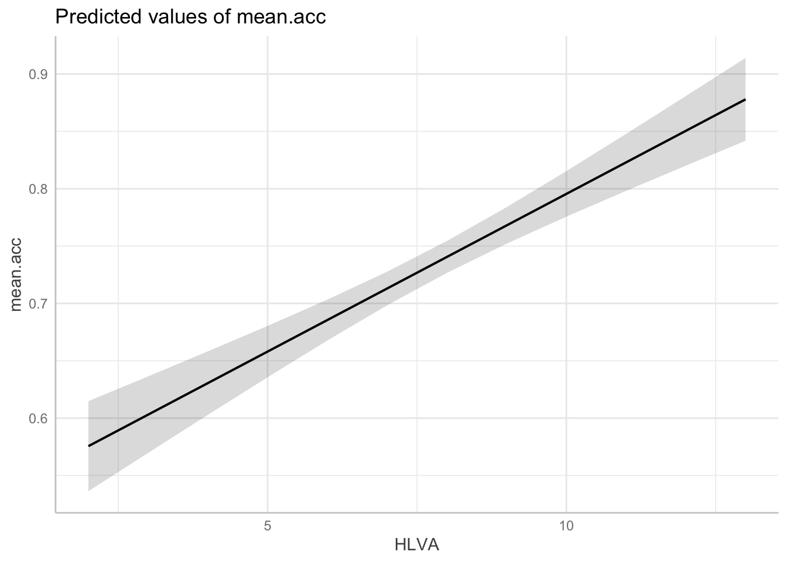
Further information you can explore
In producing prediction plots, we are using functions from the {ggeffects} library. Can you locate online information about working with the library functions?
- Try doing a search with the key words:
in r ggeffects.
If you do that, you will see links to the website:
https://strengejacke.github.io/ggeffects/
In the {ggeffects} online information, you can see links to practical examples. Can you use the information under Practical examples to adjust the appearance of the prediction plots?
How-to Task 8 – Optional – Edit the appearance of the marginal effect (prediction) plot as you can with any ggplot object
Once we have created the model predictions plot, we can edit it like we would edit any other ggplot object.
- This is clearly advanced but it helps you to see just how powerful your capabilities can be if you aim to develop skills in this kind of work.
p.model <- plot(dat)
p.model +
geom_point(data = all.studies.subjects,
aes(x = HLVA, y = mean.acc), size = 1.5, alpha = .75, colour = "lightgreen") +
geom_line(linewidth = 1.5) +
ylim(0, 1.1) + xlim(0, 16) +
theme_bw() +
theme(
axis.text = element_text(size = rel(1.15)),
axis.title = element_text(size = rel(1.25)),
plot.title = element_text(size = rel(1.4))
) +
xlab("Health literacy (HLVA)") + ylab("Mean accuracy") +
ggtitle("Effect of health literacy on mean comprehension accuracy")Scale for y is already present.
Adding another scale for y, which will replace the existing scale.Warning: Removed 54 rows containing missing values or values outside the scale range
(`geom_point()`).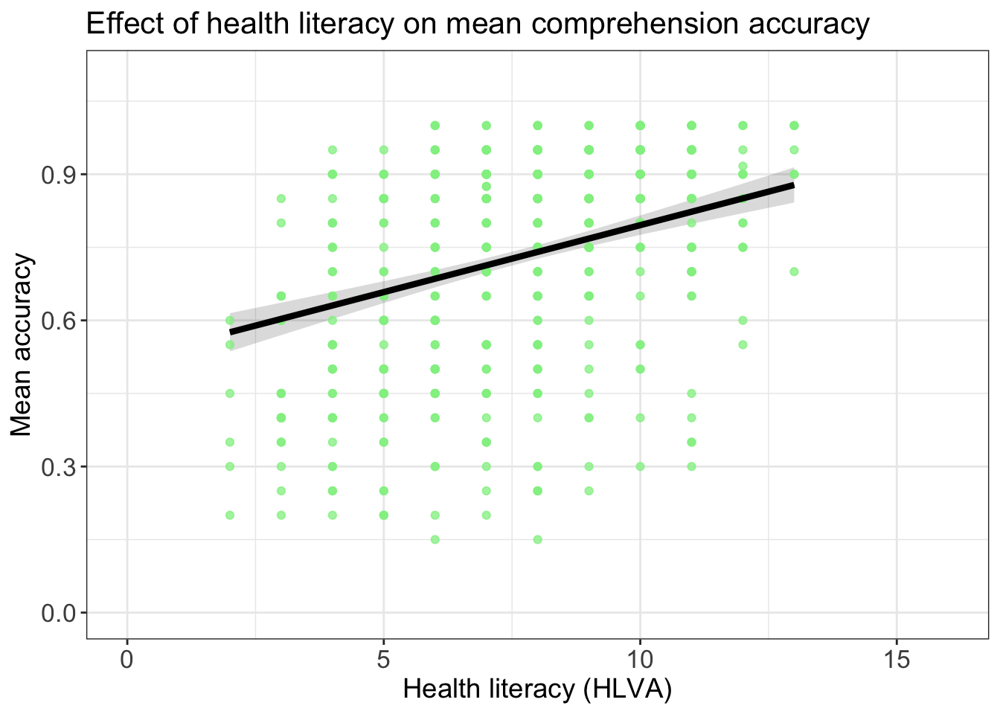
We do this in stages, as we have done for other kinds of plots:
p.model <- plot(dat)– we create a plot object, which we call ‘p.model’.p.model +– we then set up the first line of a series of code lines, starting with the name of the plot,p.modeland a+to show we are going to add some edits.geom_point(data = all.studies.subjects, aes(x = HLVA, y = mean.acc) ...)– we first add the raw data points showing the observedHLVAandmean.accfor each person in our sample.geom_point(... size = 1.5, alpha = .75, colour = "lightgreen") +– we modify the appearance of the points, thengeom_line(size = 1.5) +– we add the prediction line, using the predictions created earlier, thenylim(0, 1.1) + xlim(0, 16) +– we set axis limits to show the full potential range of variation in each variable, thentheme_bw()– we set the theme to black and white, thentheme(axis.text = element_text(size = rel(1.15)), ...)– we modify the relative size of x-axis, y-axis and plot title label font, thenxlab("Health literacy (HLVA)") + ylab("Mean accuracy") +– we edit labels to make them easier to understand, thenggtitle("Effect of health literacy on mean comprehension accuracy")– we give the plot a title
Notice that we are constructing a complex plot from two datasets:
- We use
plot(dat)to construct a plot from (1.) the set of predictions, showing the prediction line usinggeom_line(size = 1.5) + - We then add a layer to the plot to show (2.) the raw sample data, using
geom_point(data = all.studies.subjects, ...)– to tell R to work with the sample data-setall.studies.subjects, and to show points representing the (aesthetic mappings) values, given that sample data, for (x = HLVA, y = mean.acc).
What are we learning here?
This complex plot is a good example of:
- How we can plot summary of prediction data plus observed outcomes, and this connects to the classes on visualization.
- How we can add layers of edits, or geometric objects, together to create complex plots that can show our audience messages like, here, that there is an average trend (shown by the line) but that individual outcomes vary quite a bit from the average.
Tip
No model will be perfect.
- It is often useful to compare model estimates – here, the slopes – with the raw data observations.
- Visualizing the difference between what we observe and what we predict helps to make sense of how our prediction model could be improved.
How-to Task 9 – Optional – Now produce plots that show the predictions for all the predictor variables in the model
This is optional but we offer the task as an opportunity for practice with these notes.
- The code may get pretty lengthy.
- You will need to adjust axis labels so for each plot we see the correct predictor as the x-axis label
- You will give the plot titles as letters a-e so that, if you put this plot in a report, you can refer to each plot by letter in comments in a report.
Code
We will use the {Patchwork} library:
library(patchwork)First, fit the model and get the model information:
model <- lm(mean.acc ~ HLVA + SHIPLEY + FACTOR3 + AGE,
data = all.studies.subjects)Second, get the predictions, given the model information, for two different predictor variables.
- Notice that I use different names for different sets of predictors.
dat.HLVA <- ggpredict(model, "HLVA")
dat.SHIPLEY <- ggpredict(model, "SHIPLEY")Third, produce plots of the predictions, giving each plot object a different plot name.
- Notice that I use different names for different sets of predictors.
plot.HLVA <- plot(dat.HLVA)
plot.SHIPLEY <- plot(dat.SHIPLEY)Last, put the two plots together by calling their names.
plot.HLVA + plot.SHIPLEY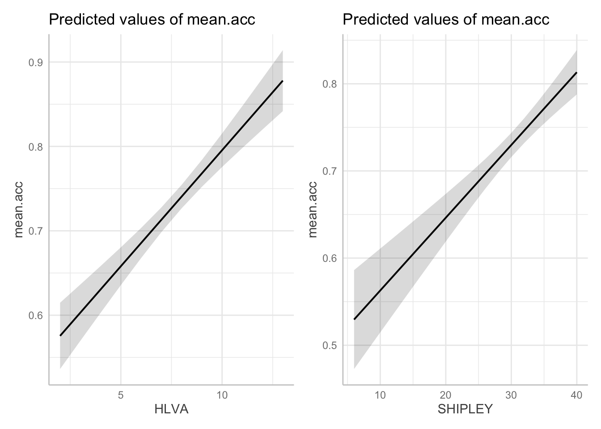
The {Patchwork} library functions are really powerful and the documentation information is really helpful:
https://patchwork.data-imaginist.com/articles/patchwork.html
What are we learning here?
If you follow the code example, and learn how to:
- complete a linear model analysis with multiple predictors and
- present the model results, for all effects (estimates of the impact of all predictors) simultaneously
- then this is a big deal, as a skill development learning achievement
- because knowing about this process, and knowing how to do it, unlocks an important advanced analysis and visualization skill.
Tip
Knowing how to follow this model \(\rightarrow\) visualization workflow gives you a competitive advantage in future professional settings (job applications, interviews, workplace) because not many Psychology graduates can do it, yet.
10.4.2.6 How-to Part 6: New: estimate the effects of factors as well as numeric variables
As we have seen, one of our research questions is:
- What person attributes predict success in understanding?
We have not yet included any categorical or nominal variables as predictors but we can, and should: lm() can cope with any kind of variable as a predictor.
Tip
In Part 4 of the Week 10 lectures, I explain that fundamentally every kind of analysis you have learnt before (t-test, ANOVA, etc.) can be understood as a kind of linear model. This part shows how that works.
- In a (two groups) t-test, you are comparing the average outcome between two different groups.
- To do that analysis, you need an outcome variable (like
mean.acc) and a categorical variable or factor (like, say, experimental condition: condition 1 versus condition 2). - Here, we see how you can do the same kind of group comparison using a linear model.
There are different ways to do this, here we look at one. Extra information about the second can be found in the drop-down box, following.
How-to Task 10 – Fit a linear model including both numeric variables and categorical variables as predictors model including both numeric variables and categorical variables as predictors
We begin by inspecting the data to check what variables are categorical or nominal variables – factors – using summary().
Code
summary(all.studies.subjects) ResponseId mean.acc mean.self AGE
Length:615 Min. :0.150 Min. :1.000 Min. : 18.00
Class :character 1st Qu.:0.600 1st Qu.:5.600 1st Qu.: 20.00
Mode :character Median :0.800 Median :6.800 Median : 23.00
Mean :0.734 Mean :6.529 Mean : 28.34
3rd Qu.:0.900 3rd Qu.:7.800 3rd Qu.: 30.50
Max. :1.000 Max. :9.000 Max. :100.00
NA's :54 NA's :54
GENDER EDUCATION ETHNICITY SHIPLEY
Length:615 Length:615 Length:615 Min. : 0.00
Class :character Class :character Class :character 1st Qu.:25.00
Mode :character Mode :character Mode :character Median :32.00
Mean :28.98
3rd Qu.:36.00
Max. :40.00
HLVA FACTOR3 NATIVE.LANGUAGE study
Min. : 0.000 Min. : 0.00 Length:615 Length:615
1st Qu.: 5.000 1st Qu.:41.00 Class :character Class :character
Median : 8.000 Median :48.00 Mode :character Mode :character
Mean : 7.224 Mean :44.03
3rd Qu.: 9.500 3rd Qu.:53.00
Max. :13.000 Max. :63.00
summary() gives you the information you need because R shows factors with a count of the number of observations for each level.
We can build on our previous work by including the factor NATIVE.LANGUAGE as a predictor:
model <- lm(mean.acc ~ HLVA + SHIPLEY + FACTOR3 + AGE + NATIVE.LANGUAGE,
data = all.studies.subjects)
summary(model)
Call:
lm(formula = mean.acc ~ HLVA + SHIPLEY + FACTOR3 + AGE + NATIVE.LANGUAGE,
data = all.studies.subjects)
Residuals:
Min 1Q Median 3Q Max
-0.55939 -0.08115 0.02056 0.10633 0.41598
Coefficients:
Estimate Std. Error t value Pr(>|t|)
(Intercept) 0.1873086 0.0472991 3.960 8.47e-05 ***
HLVA 0.0242787 0.0031769 7.642 9.44e-14 ***
SHIPLEY 0.0073947 0.0011144 6.635 7.70e-11 ***
FACTOR3 0.0053455 0.0008947 5.975 4.12e-09 ***
AGE -0.0026434 0.0004905 -5.390 1.05e-07 ***
NATIVE.LANGUAGEOther -0.0900035 0.0141356 -6.367 4.04e-10 ***
---
Signif. codes: 0 '***' 0.001 '**' 0.01 '*' 0.05 '.' 0.1 ' ' 1
Residual standard error: 0.1612 on 555 degrees of freedom
(54 observations deleted due to missingness)
Multiple R-squared: 0.4221, Adjusted R-squared: 0.4169
F-statistic: 81.09 on 5 and 555 DF, p-value: < 2.2e-16Now, take a look at the results to answer the following questions.
Q.14. Can you report the estimated effect of
NATIVE.LANGUAGE(the coding of participant language status:EnglishversusOther)?
Tip
A.14. The effect of language status (
NATIVE.LANGUAGE) on mean accuracy of understanding is significant (estimate = -0.09, t = -6.37, p < .001) indicating that not being a native speaker of English (‘Other’) is associated with lower accuracy.
Q.15. Can you report the model and the model fit statistics?
Tip
A.15. We fitted a linear model with mean comprehension accuracy as the outcome and health literacy (
HLVA), reading strategy (FACTOR3), vocabulary (SHIPLEY) andAGE(years), as well as language status as predictors. The model is significant overall, with F(5, 555) = 81.09, p < .001, and explains 42% of variance (adjusted R2 = 0.42).
Q.16. What changes, when you compare the models with versus without
NATIVE.LANGUAGE?
Tip
A.16. If you compare the summaries, for the last two models, you can see that the proportion of variance explained,
R-sq, increases to 42% (0.4221), suggesting that knowing about participant language background helps to account for their response accuracy in tests of comprehension of health advice.
What are we learning here?
What are factors?
- A factor is a categorical variable.
- Categorical variables have a “fixed and known set of possible values”, for example, maybe you are working with the factor
EDUCATION: in the data collection process, answers to the question “What is your education level?” can have only one of three possible values (further, higher, secondary). - For any factor, different values of the variable are called
levelsso, forEDUCATIONthe different levels are:further, higher, secondary
R treats factors differently from other kinds of variables:
- R will not give you summary statistics (e.g., a mean) for values of a factor. It can’t because: what is the mean of education?
- R will count the number of times each
levelin afactorappears in a sample. - If you are plotting a bar chart or a boxplot to show outcomes for different groups or conditions then the group or condition coding variable (e.g.,
aes(x = group)) has to be a factor.
R handles factors, by default, by picking one level (e.g., English) as the reference level (or baseline) and comparing outcomes to that baseline, for each other factor level (here, Other).
- This is why, in the summary of estimates for this model, the effect of
NATIVE.LANGUAGEis estimated as the average difference inmean.accoutcome forEnglishcompared toOtherparticipants. - This is why the effect is listed as:
NATIVE.LANGUAGEOtherin the summary table for the model
Further information you can explore
Note that I quote, here, from the powerful {forcats} library of tools for working with factors:
https://forcats.tidyverse.org/
You can read more about factor coding schemes here:
https://talklab.psy.gla.ac.uk/tvw/catpred/
and here:
Extra information for students interested in ANOVAs
There are different ways to code factors for analysis:
- If you are doing an analysis where your data come from, say, a factorial design (e.g. a 2 x 2 study design) then you will want to use a different coding scheme: sum or effect coding.
It is easy to do this, in two steps, proceeding as follows.
- We first change the coding scheme.
- Get the
{memisc}library:
library(memisc)- Make sure that the variable is being treated as a factor:
all.studies.subjects$NATIVE.LANGUAGE <- as.factor(all.studies.subjects$NATIVE.LANGUAGE)- Check the coding:
contrasts(all.studies.subjects$NATIVE.LANGUAGE) Other
English 0
Other 1- Change the coding
contrasts(all.studies.subjects$NATIVE.LANGUAGE) <- contr.sum(2, base = 1)The arguments in contr.sum(2, base = 1) tell R which level we want to be the reference level.
- Check the coding to show you got what you want:
contrasts(all.studies.subjects$NATIVE.LANGUAGE) 2
English -1
Other 1- We then fit a linear model of the outcome, given our predictors:
model <- lm(mean.acc ~ HLVA + SHIPLEY + FACTOR3 + AGE + NATIVE.LANGUAGE,
data = all.studies.subjects)
summary(model)
Call:
lm(formula = mean.acc ~ HLVA + SHIPLEY + FACTOR3 + AGE + NATIVE.LANGUAGE,
data = all.studies.subjects)
Residuals:
Min 1Q Median 3Q Max
-0.55939 -0.08115 0.02056 0.10633 0.41598
Coefficients:
Estimate Std. Error t value Pr(>|t|)
(Intercept) 0.1423068 0.0457437 3.111 0.00196 **
HLVA 0.0242787 0.0031769 7.642 9.44e-14 ***
SHIPLEY 0.0073947 0.0011144 6.635 7.70e-11 ***
FACTOR3 0.0053455 0.0008947 5.975 4.12e-09 ***
AGE -0.0026434 0.0004905 -5.390 1.05e-07 ***
NATIVE.LANGUAGE2 -0.0450018 0.0070678 -6.367 4.04e-10 ***
---
Signif. codes: 0 '***' 0.001 '**' 0.01 '*' 0.05 '.' 0.1 ' ' 1
Residual standard error: 0.1612 on 555 degrees of freedom
(54 observations deleted due to missingness)
Multiple R-squared: 0.4221, Adjusted R-squared: 0.4169
F-statistic: 81.09 on 5 and 555 DF, p-value: < 2.2e-16Optional.Q.1. What changes, when you compare the models with versus without sum coding of
NATIVE.LANGUAGE?
Tip
Optional.A.1. If you compare the summaries, for the last two models, you can see that the estimate for the coefficient of
NATIVE.LANGUAGEchanges in two ways:
- the name changes, from
NATIVE.LANGUAGEOthertoNATIVE.LANGUAGE2, reflecting the change in coding;
- the slope estimate changes, from
-0.0900035to-0.0450018.
Note: the change in the estimate happens because we go from estimating the average difference in level between 0 (
English) versus 1 (Other), a change of one unit to estimating the average difference in level between -1 (English) versus 1 (Other), a change of 2 units.
Being able to change the coding of nominal or categorical variables is very useful. And enables you to do ANOVA style analyses given factorial study designs e.g.
model <- aov(lm(mean.acc ~ HLVA + SHIPLEY + FACTOR3 + AGE + NATIVE.LANGUAGE,
data = all.studies.subjects))
summary(model) Df Sum Sq Mean Sq F value Pr(>F)
HLVA 1 5.753 5.753 221.47 < 2e-16 ***
SHIPLEY 1 2.272 2.272 87.44 < 2e-16 ***
FACTOR3 1 0.751 0.751 28.92 1.11e-07 ***
AGE 1 0.703 0.703 27.06 2.78e-07 ***
NATIVE.LANGUAGE 1 1.053 1.053 40.54 4.04e-10 ***
Residuals 555 14.418 0.026
---
Signif. codes: 0 '***' 0.001 '**' 0.01 '*' 0.05 '.' 0.1 ' ' 1
54 observations deleted due to missingnessNotice: we use aov() to get an ANOVA summary for the model.
As before, you can fit a linear model including both numeric variables and categorical variables as predictors: and then plot the predicted effect of the factor.
- We first fit the model, including
NATIVE.LANGUAGEthen use the ggpredict() function to get the predictions.
dat <- ggpredict(model, "NATIVE.LANGUAGE")
plot(dat)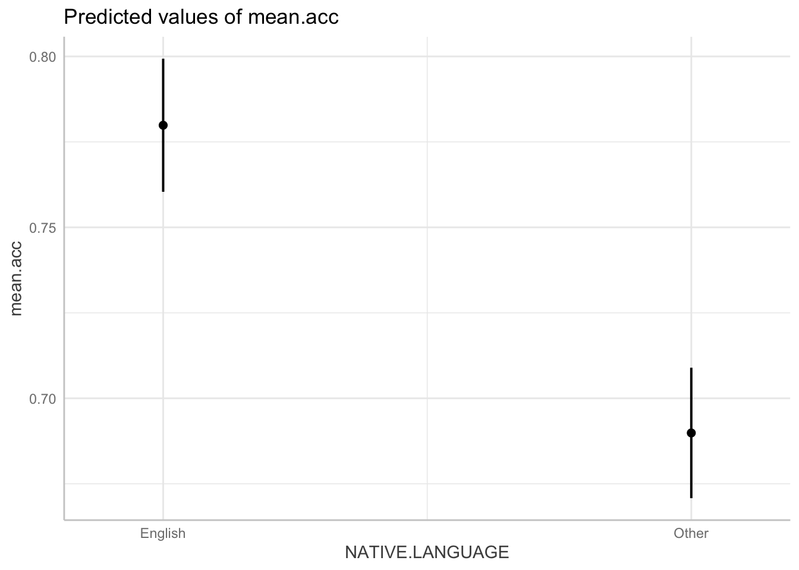
10.4.2.7 How-to Part 7: New: examine associations comparing data from different samples
The lecture for developing the linear model includes a discussion of the ways in which the observed associations between variables or the estimated effects of predictor variables on some outcome may differ between different studies, different samples of data.
To draw the plots, I used the {ggplot2} library function facet_wrap():
all.studies.subjects %>%
ggplot(aes(x = SHIPLEY, y = mean.acc)) +
geom_point(size = 2, alpha = .5, colour = "darkgrey") +
geom_smooth(size = 1.5, colour = "red", method = "lm", se = FALSE) +
xlim(0, 40) +
ylim(0, 1.1)+
theme_bw() +
theme(
axis.text = element_text(size = rel(1.15)),
axis.title = element_text(size = rel(1.5))
) +
xlab("Vocabulary (Shipley)") + ylab("Mean accuracy") +
facet_wrap(~ study)Warning: Using `size` aesthetic for lines was deprecated in ggplot2 3.4.0.
ℹ Please use `linewidth` instead.`geom_smooth()` using formula = 'y ~ x'Warning: Removed 54 rows containing non-finite outside the scale range
(`stat_smooth()`).Warning: Removed 54 rows containing missing values or values outside the scale range
(`geom_point()`).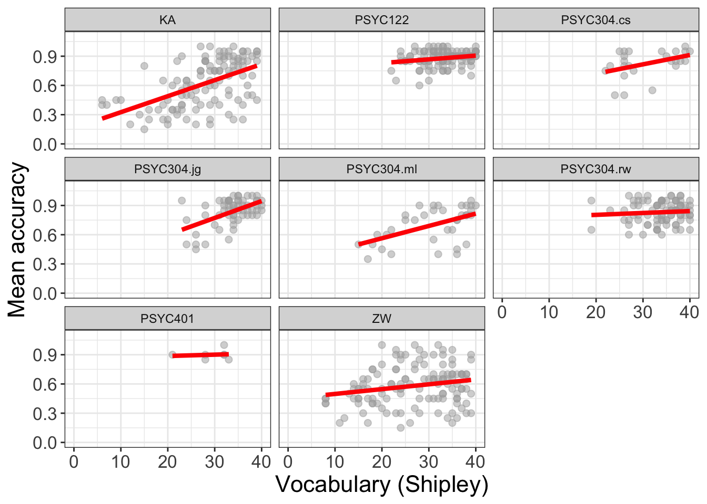
What is new here is this bit: facet_wrap(~ study)
This is how it works:
facet_wrap()– the function asks R to take the data-set and split it into subsets.facet_wrap(~ study)– tells the function to split the data-set according to the different levels of a named factor:study.
So: you need to identify a factor to do this work.
How-to Task 11 – Optional – Fit a linear model and plot the model predictions, for different study samples, all together, to enable comparisons of effects between studies
Change the factor in facet_wrap() to show how the vocabulary effect may vary between English monolinguals versus non-native speakers of English.
Tip
all.studies.subjects %>%
ggplot(aes(x = SHIPLEY, y = mean.acc)) +
geom_point(size = 2, alpha = .5, colour = "darkgrey") +
geom_smooth(size = 1.5, colour = "red", method = "lm", se = FALSE) +
xlim(0, 40) +
ylim(0, 1.1)+
theme_bw() +
theme(
axis.text = element_text(size = rel(1.15)),
axis.title = element_text(size = rel(1.5))
) +
xlab("Vocabulary (Shipley)") + ylab("Mean accuracy") +
facet_wrap(~ NATIVE.LANGUAGE)`geom_smooth()` using formula = 'y ~ x'Warning: Removed 54 rows containing non-finite outside the scale range
(`stat_smooth()`).Warning: Removed 54 rows containing missing values or values outside the scale range
(`geom_point()`).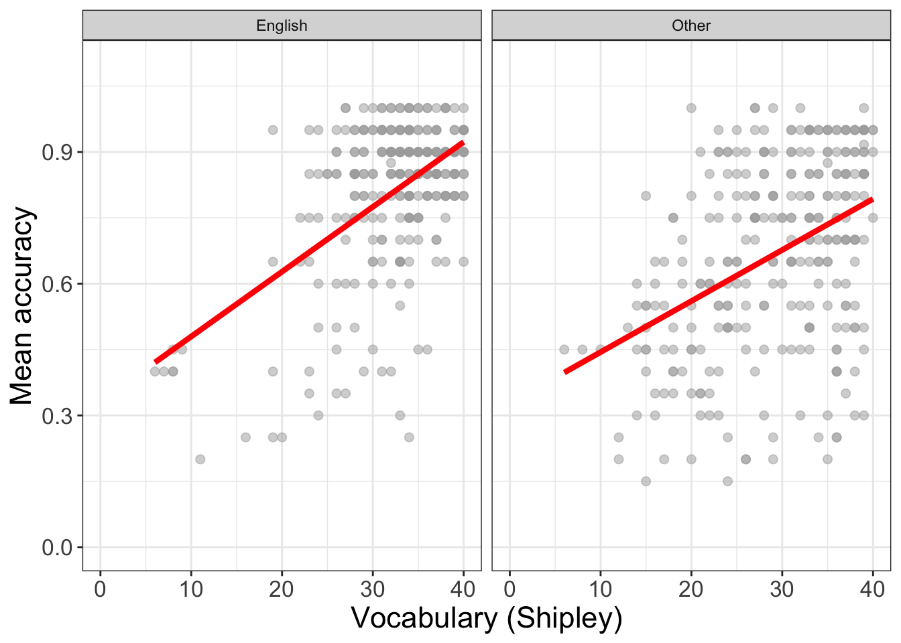
What are we learning here?
We can work with factors to split data-sets up by group or condition, or combinations of groups or conditions. We can then compare patterns, like outcomes, or the ways that outcomes are affected by predictors, in different groups or in different combinations.
Important
But the critical lesson is that, when we visualize trends or differences between groups or, as here, between different studies, then we often see that the effects of variables varies between samples.
- This variation between samples in the effects we observe is a key insight into what working with people involves: variation.
Further information you can explore
You can read more about faceting here:
10.4.3 The practical exercises
Now you will progress through a series of tasks, and challenges, to test what you have learnt.
Warning
We will continue to work with the data file
2022-12-08_all-studies-subject-scores.csv
We again split the steps into into parts, tasks and questions.
We are going to work through the following workflow steps: each step is labelled as a practical part.
- Set-up
- Load the data
- Revision: using a linear model to answer research questions – one predictor.
- New: using a linear model to answer research questions – multiple predictors.
- New: plot predictions from linear models.
- New: estimate the effects of factors as well as numeric variables.
- New: examine associations comparing data from different samples.
Tip
- The
how-toguide showed you what functions you needed and how you should write the function code. - Use the code structure you have seen and change it to use the data required for these
practical exercises: you will need to change the data-set name, the variable names, to get the code to work for the following exercises. - Identify what code elements must change, and what code elements have to stay the same.
Note that, for Part 5, we focus on using the ggpredict() tools you saw in the how-to guide but, for the practical exercises, use these tools to better understand what linear models (generally) do when we use them.
In the following, we will guide you through the tasks and questions step by step.
Important
An answers version of the workbook will be provided after the practical class.
10.4.3.1 Practical Part 1: Set-up
To begin, we set up our environment in R.
Practical Task 1 – Run code to empty the R environment
Code
rm(list=ls())Practical Task 2 – Run code to load relevant libraries
Notice that in Week 10 we need to work with the libraries ggeffects, patchwork and tidyverse. Use the library() function to make these libraries available to you.
Code
library("ggeffects")
library("patchwork")
library("psych")
library("tidyverse")10.4.3.2 Practical Part 2: Load the data
Practical Task 3 – Read in the data file we will be using
The data file is called:
2022-12-08_all-studies-subject-scores.csv
Use the read_csv() function to read the data files into R:
Code
all.studies.subjects <- read_csv("2022-12-08_all-studies-subject-scores.csv")Rows: 615 Columns: 12
── Column specification ────────────────────────────────────────────────────────
Delimiter: ","
chr (6): ResponseId, GENDER, EDUCATION, ETHNICITY, NATIVE.LANGUAGE, study
dbl (6): mean.acc, mean.self, AGE, SHIPLEY, HLVA, FACTOR3
ℹ Use `spec()` to retrieve the full column specification for this data.
ℹ Specify the column types or set `show_col_types = FALSE` to quiet this message.Practical Task 4 – Get summary statistics for only the numeric variables: AGE and HLVA
Use the {psych} library describe() function to get a table summary of descriptive statistics for these variables.
Code
Here, we can do this in two steps:
- we select the variables we care about
- we get just the descriptive statistics we want for those variables
all.studies.subjects %>%
dplyr::select(AGE, HLVA) %>%
describe(skew = FALSE) vars n mean sd median min max range se
AGE 1 615 28.34 13.56 23 18 100 82 0.55
HLVA 2 615 7.22 3.09 8 0 13 13 0.12Pract.Q.1. What is the mean health literacy (HLVA) score in this sample?
Pract.A.1. 7.22
Pract.Q.2. What are the minimum and maximum ages in this sample?
Pract.A.2. 18-100
Pract.Q.3. Do you see any reason to be concerned about the data in this sample?
Hint: It is always a good idea to use your visualization skills to examine the distribution of variable values in a dataset:
all.studies.subjects %>%
ggplot(aes(x = AGE)) +
geom_histogram()`stat_bin()` using `bins = 30`. Pick better value `binwidth`.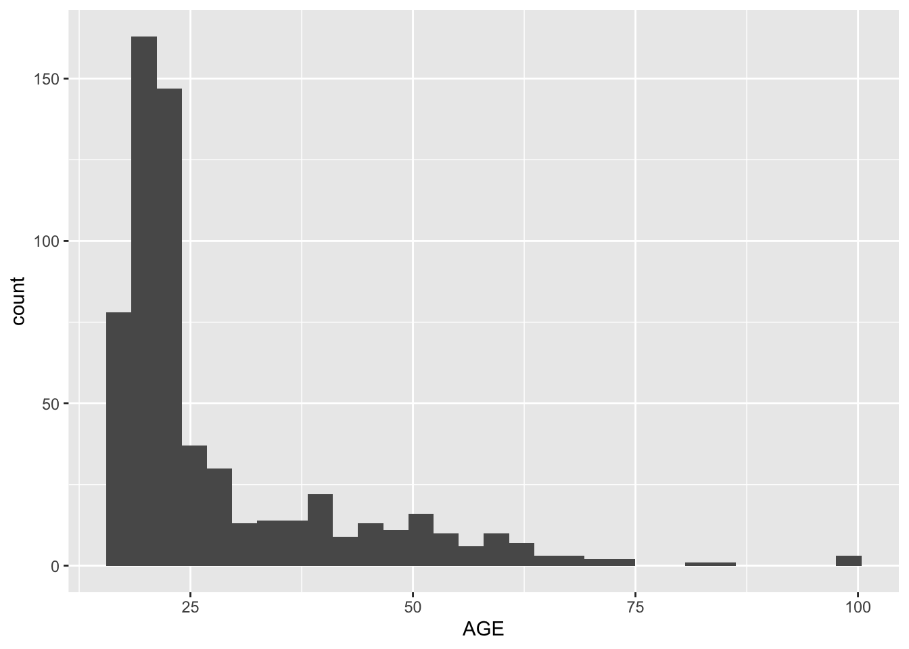
Pract.A.3. It looks like the
AGEof 100 is maybe an error, or an extreme outlier.
10.4.3.3 Practical Part 3: Revision – using a linear model to answer research questions – one predictor.
One of our research questions is:
- Can people accurately evaluate whether they correctly understand written health information?
We can address this question by examining whether someone’s rated evaluation of their own understanding matches their performance on a test of that understanding, and by investigating what variables predict variation in mean self-rated accuracy.
Tip
Note that ratings of accuracy are ordinal (categorical ordered) data but that, here, we may choose to examine the average of participants’ ratings of their own understanding of health information for the purposes of this example.
- We learn about ordinal models for ordinal data in PSYC412.
For these data, participants were asked to respond to questions about health information to get mean.acc scores and were asked to rate their own understanding of the same information.
- If you can evaluate your own understanding then ratings of understanding should be associated with performance on tests of understanding.
Practical Task 5 – Estimate the relation between outcome mean self-rated accuracy (mean.self) and tested accuracy of understanding (mean.acc)
We can use lm() to estimate whether the ratings of accuracy actually predict the outcome tested accuracy levels.
Code
model <- lm(mean.acc ~ mean.self, data = all.studies.subjects)
summary(model)
Call:
lm(formula = mean.acc ~ mean.self, data = all.studies.subjects)
Residuals:
Min 1Q Median 3Q Max
-0.58815 -0.09437 0.03841 0.13530 0.34080
Coefficients:
Estimate Std. Error t value Pr(>|t|)
(Intercept) 0.351300 0.030683 11.45 <2e-16 ***
mean.self 0.058613 0.004544 12.90 <2e-16 ***
---
Signif. codes: 0 '***' 0.001 '**' 0.01 '*' 0.05 '.' 0.1 ' ' 1
Residual standard error: 0.1855 on 559 degrees of freedom
(54 observations deleted due to missingness)
Multiple R-squared: 0.2294, Adjusted R-squared: 0.228
F-statistic: 166.4 on 1 and 559 DF, p-value: < 2.2e-16If you first fit the appropriate model, then read the model summary, you can answer the following questions.
Pract.Q.4. What is the estimate for the coefficient of the effect of the predictor
mean.selfon the outcomemean.accin this model?
Pract.A.4. 0.058613
Pract.Q.5. Is the effect significant?
Pract.A.5. It is significant, p < .05
Pract.Q.6. What are the values for t and p for the significance test for the coefficient?
Pract.A.6. t = 12.90, p <2e-16
Pract.Q.7. What do you conclude is the answer to the research question, given the linear model results?
Pract.A.7. The model slope estimate suggests that higher levels of rated understanding can predict higher levels of tested understanding so, yes: it does appear that people can evaluate their own understanding.
Pract.Q.8. What is the F-statistic for the regression? Report F, DF and the p-value.
Pract.A.8. F-statistic: 166.4 on 1 and 559 DF, p-value: < 2.2e-16
Pract.Q.9. Is the regression significant?
Pract.A.9. Yes: the regression is significant.
Pract.Q.10. What is the Adjusted R-squared?
Pract.A.10. Adjusted R-squared: 0.228
Pract.Q.11. Explain in words what this R-squared value indicates?
Pract.A.11. The R-squared suggests that 23% of outcome variance can be explained by the model
10.4.3.4 Practical Part 4: New – using a linear model to answer research questions – multiple predictors
One of our research questions is:
- Can people accurately evaluate whether they correctly understand written health information?
We have already looked at this question by asking whether ratings of understanding predict performance on tests of understanding. But there is a problem with that analysis – it leaves open the question:
- What actually predicts ratings of understanding?
We can look at that follow-up question through the analysis we do next.
Practical Task 6 – Examine the relation between outcome mean self-rated accuracy (mean.self) and multiple predictors including: health literacy (HLVA); vocabulary (SHIPLEY); AGE; reading strategy (FACTOR3); as well as mean.acc
We use lm(), as before, but now specify each variable listed here by variable name
- outcome: mean self-rated accuracy (
mean.self) - predictors: health literacy (
HLVA); vocabulary (SHIPLEY);AGE; reading strategy (FACTOR3); as well asmean.acc.
Code
model <- lm(mean.self ~ HLVA + SHIPLEY + FACTOR3 + AGE + mean.acc,
data = all.studies.subjects)
summary(model)
Call:
lm(formula = mean.self ~ HLVA + SHIPLEY + FACTOR3 + AGE + mean.acc,
data = all.studies.subjects)
Residuals:
Min 1Q Median 3Q Max
-5.4479 -0.8585 0.1459 0.9327 4.6791
Coefficients:
Estimate Std. Error t value Pr(>|t|)
(Intercept) 0.756121 0.400363 1.889 0.0595 .
HLVA 0.066543 0.029368 2.266 0.0238 *
SHIPLEY 0.012512 0.010188 1.228 0.2199
FACTOR3 0.062333 0.008079 7.715 5.64e-14 ***
AGE 0.002707 0.004417 0.613 0.5403
mean.acc 2.502024 0.361094 6.929 1.18e-11 ***
---
Signif. codes: 0 '***' 0.001 '**' 0.01 '*' 0.05 '.' 0.1 ' ' 1
Residual standard error: 1.42 on 555 degrees of freedom
(54 observations deleted due to missingness)
Multiple R-squared: 0.3279, Adjusted R-squared: 0.3219
F-statistic: 54.17 on 5 and 555 DF, p-value: < 2.2e-16If you look at the model summary you can answer the following questions
Pract.Q.12. What predictors are significant in this model?
Pract.A.12. Health literacy (‘HLVA’), reading strategy (‘FACTOR3’) and performance on tests of accuracy of understanding (‘mean.acc’) all appear to significantly predict variation in mean ratings of understanding (‘mean.self’).
Pract.Q.13. What is the estimate for the coefficient of the effect of the predictor,
mean.acc, in this model?
Pract.A.13. 2.502024
Pract.Q.14. Is the effect significant?
Pract.A.14. It is significant because p < .05
Pract.Q.15. What are the values for t and p for the significance test for the coefficient?
Pract.A.15. t = 6.929, p = 1.18e-11
Pract.Q.16. What do you conclude is the answer to the follow-up question, what actually predicts ratings of understanding?
Pract.A.16. Ratings of understanding appear to be predicted by performance on tests of accuracy of understanding, together with variation in health literacy and reading strategy.
10.4.3.5 Practical Part 5: New – plot predictions from linear models
In this part, the practical work involves plotting the predictions from two linear models but the benefit from this practical work is to better your understanding of what linear models are doing.
So, our research questions is:
- Can people accurately evaluate whether they correctly understand written health information?
We can look at this question in two ways:
- we can focus on whether
mean.selfpredictsmean.acc? - or, in reverse, whether
mean.accpredictsmean.self?
People could (1.) be good at understanding accurately what they read (measured as mean.acc), so that that accurate understanding results in accurate evaluation of their own understanding (measured as mean.self). Or people could (2.) be good at judging their own understanding (mean.self) so that they can then be accurate in their understanding of what they read. This is not just a tricksy way of talking: it could be that people who are good at evaluating if they understand what they read are able to work more effectively at that understanding, or the opposite could be the case.
The direction of cause-and-effect is just unclear, here.
Practical Task 7 – We cannot actually resolve the question of causality but we can learn a lot if we look at two models incorporating the same variables
- If we focus on whether (predictor)
mean.selfpredicts (outcome)mean.accthen the model should be:mean.acc ~ mean.self - If we focus on whether (predictor)
mean.accpredicts (outcome)mean.selfthen the model should be:mean.self ~ mean.acc
The two models involve the same variables but arrange the variables differently, in the code, depending on which variable is specified as the outcome versus which variable is specified as the predictor.
Tip
Note that the comparison between these models teaches us something about what it is that linear models predict.
- You want to focus on the estimate of the coefficient of the predictor variable, for each model, presented in the model summary results.
Pract.Q.17. Can you write the code for the two models? Can you give each model a distinctive name?
Code
model.1 <- lm(mean.acc ~ mean.self, data = all.studies.subjects)
summary(model.1)
Call:
lm(formula = mean.acc ~ mean.self, data = all.studies.subjects)
Residuals:
Min 1Q Median 3Q Max
-0.58815 -0.09437 0.03841 0.13530 0.34080
Coefficients:
Estimate Std. Error t value Pr(>|t|)
(Intercept) 0.351300 0.030683 11.45 <2e-16 ***
mean.self 0.058613 0.004544 12.90 <2e-16 ***
---
Signif. codes: 0 '***' 0.001 '**' 0.01 '*' 0.05 '.' 0.1 ' ' 1
Residual standard error: 0.1855 on 559 degrees of freedom
(54 observations deleted due to missingness)
Multiple R-squared: 0.2294, Adjusted R-squared: 0.228
F-statistic: 166.4 on 1 and 559 DF, p-value: < 2.2e-16model.2 <- lm(mean.self ~ mean.acc,
data = all.studies.subjects)
summary(model.2)
Call:
lm(formula = mean.self ~ mean.acc, data = all.studies.subjects)
Residuals:
Min 1Q Median 3Q Max
-5.2003 -0.7917 0.2040 0.9781 3.9737
Coefficients:
Estimate Std. Error t value Pr(>|t|)
(Intercept) 3.6565 0.2317 15.78 <2e-16 ***
mean.acc 3.9135 0.3034 12.90 <2e-16 ***
---
Signif. codes: 0 '***' 0.001 '**' 0.01 '*' 0.05 '.' 0.1 ' ' 1
Residual standard error: 1.515 on 559 degrees of freedom
(54 observations deleted due to missingness)
Multiple R-squared: 0.2294, Adjusted R-squared: 0.228
F-statistic: 166.4 on 1 and 559 DF, p-value: < 2.2e-16Take a look at the summary for each model.
Pract.Q.18. Why do you think it appears that the slope coefficient estimate is different if you compare:
(1.) the model, mean.acc ~ mean.self
versus
(2.) the model, mean.self ~ mean.acc?
Hint: You may benefit by reflecting on the lectures and practical materials in the chapter for week 8, especially where they concern predictions.
Pract.A.18. Linear models are prediction models. We use them to predict variation in outcomes given some set of predictor variables. Because of this, predictions must be scaled in the same way as the outcome variable.
So:
(1.) the model
mean.acc ~ mean.selfidentifiesmean.accas the outcome so if we are predicting change inmean.acc(scaled 0-1) then we are looking at coefficients that will lie somewhere on the same scale (also 0-1).
Here: the model suggests that unit change in
mean.selfpredicts increase of 0.058613 inmean.acc.
Versus:
(2.) the model,
mean.self ~ mean.accidentifiesmean.selfas the outcome so if we are predicting change inmean.self(scaled 1-9) then we are looking at coefficients that will lie somewhere on the same scale (also 1-9).
Here: the model suggests that unit change in
mean.accpredicts increase of 3.9135 inmean.self.
Pract.Q.19. Can you plot the predictions from each model?
Code
Pract.A.19. Here is the code to plot the predictions from both models:
First fit the models – give the model objects distinct names:
model.1 <- lm(mean.acc ~ mean.self, data = all.studies.subjects)
summary(model.1)
Call:
lm(formula = mean.acc ~ mean.self, data = all.studies.subjects)
Residuals:
Min 1Q Median 3Q Max
-0.58815 -0.09437 0.03841 0.13530 0.34080
Coefficients:
Estimate Std. Error t value Pr(>|t|)
(Intercept) 0.351300 0.030683 11.45 <2e-16 ***
mean.self 0.058613 0.004544 12.90 <2e-16 ***
---
Signif. codes: 0 '***' 0.001 '**' 0.01 '*' 0.05 '.' 0.1 ' ' 1
Residual standard error: 0.1855 on 559 degrees of freedom
(54 observations deleted due to missingness)
Multiple R-squared: 0.2294, Adjusted R-squared: 0.228
F-statistic: 166.4 on 1 and 559 DF, p-value: < 2.2e-16model.2 <- lm(mean.self ~ mean.acc,
data = all.studies.subjects)
summary(model.2)
Call:
lm(formula = mean.self ~ mean.acc, data = all.studies.subjects)
Residuals:
Min 1Q Median 3Q Max
-5.2003 -0.7917 0.2040 0.9781 3.9737
Coefficients:
Estimate Std. Error t value Pr(>|t|)
(Intercept) 3.6565 0.2317 15.78 <2e-16 ***
mean.acc 3.9135 0.3034 12.90 <2e-16 ***
---
Signif. codes: 0 '***' 0.001 '**' 0.01 '*' 0.05 '.' 0.1 ' ' 1
Residual standard error: 1.515 on 559 degrees of freedom
(54 observations deleted due to missingness)
Multiple R-squared: 0.2294, Adjusted R-squared: 0.228
F-statistic: 166.4 on 1 and 559 DF, p-value: < 2.2e-16Then get the predictions:
dat.1 <- ggpredict(model.1, "mean.self")
dat.2 <- ggpredict(model.2, "mean.acc")Then make the plots, and arrange them for easy comparison, side-by-side:
plot.1 <- plot(dat.1)
plot.2 <- plot(dat.2)
plot.1 + plot.2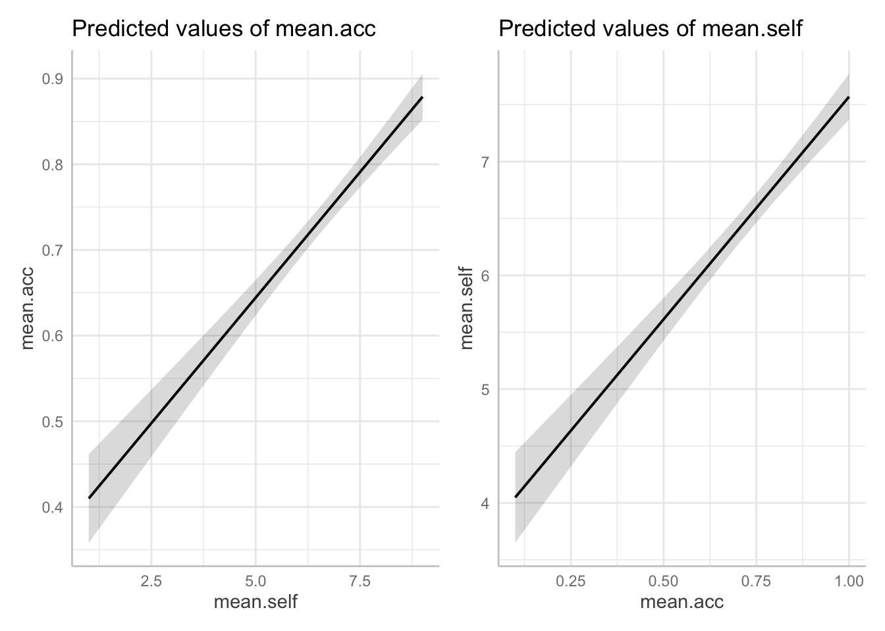
Pract.Q.20. Look at the two plots side-by-side: what do you see?
Hint: Look at changes in height of the prediction line, given changes in x-axis position of the line.
Pract.A.20. A side-by-side comparison shows that for (1.)
mean.acc ~ mean.self,increases inmean.selffrom about 2-8 are associated with a change inmean.accfrom about .4 to about .85, while for (2.)mean.self ~ mean.acc, increases inmean.selffrom about .2-1.0 are associated with a change inmean.accfrom about 4 to about 8.
What are we learning here?
Linear models are prediction models. We use them to predict variation in outcomes given some set of predictor variables.
Important
Predictions must be scaled in the same way as the outcome variable.
10.4.3.6 Practical Part 6: New – estimate the effects of factors as well as numeric variables
Practical Task 8 – Fit a linear model to examine what variables predict outcome mean self-rated accuracy of mean.self
Include in the model both numeric variables and categorical variables as predictors:
- health literacy (
HLVA); vocabulary (SHIPLEY);AGE; reading strategy (FACTOR3); as well asmean.accandNATIVE.LANGUAGE.
Code
model <- lm(mean.self ~ HLVA + SHIPLEY + FACTOR3 + AGE + mean.acc +
NATIVE.LANGUAGE,
data = all.studies.subjects)Pract.Q.21. Can you report the estimated effect of
NATIVE.LANGUAGE(the coding of participant language status:Englishversusother)?
Hint: you will need to get a summary of the model you have coded.
Code
summary(model)
Call:
lm(formula = mean.self ~ HLVA + SHIPLEY + FACTOR3 + AGE + mean.acc +
NATIVE.LANGUAGE, data = all.studies.subjects)
Residuals:
Min 1Q Median 3Q Max
-5.3580 -0.8804 0.1250 0.9093 4.7323
Coefficients:
Estimate Std. Error t value Pr(>|t|)
(Intercept) 0.992731 0.421865 2.353 0.0190 *
HLVA 0.063174 0.029377 2.150 0.0319 *
SHIPLEY 0.011553 0.010184 1.134 0.2571
FACTOR3 0.063973 0.008119 7.880 1.75e-14 ***
AGE 0.002039 0.004425 0.461 0.6452
mean.acc 2.331519 0.373357 6.245 8.46e-10 ***
NATIVE.LANGUAGEOther -0.225432 0.128793 -1.750 0.0806 .
---
Signif. codes: 0 '***' 0.001 '**' 0.01 '*' 0.05 '.' 0.1 ' ' 1
Residual standard error: 1.418 on 554 degrees of freedom
(54 observations deleted due to missingness)
Multiple R-squared: 0.3316, Adjusted R-squared: 0.3244
F-statistic: 45.82 on 6 and 554 DF, p-value: < 2.2e-16Pract.A.21. The effect of language status (
NATIVE.LANGUAGE) on mean accuracy of understanding is not significant (estimate = -0.225432, t = -1.750, p = .081) indicating that not being a native speaker of English (Other) is not associated with lower self-rated accuracy.
Pract.Q.22. Can you report the overall model and model fit statistics?
Pract.A.22. We fitted a linear model with mean self-rated accuracy as the outcome and with the predictors: health literacy (HLVA), reading strategy (FACTOR3), vocabulary (SHIPLEY) and AGE (years), as well as mean accuracy (mean.acc) and language status. The model is significant overall, with F(6, 554) = 45.82, p < .001, and explains 32% of variance (adjusted R2 = 0.32).
Pract.Q.23. Can you plot the predicted effect of
NATIVE.LANGUAGEgiven your model?
Code
We first fit the model, including NATIVE.LANGUAGE:
model <- lm(mean.self ~ HLVA + SHIPLEY + FACTOR3 + AGE + mean.acc +
NATIVE.LANGUAGE,
data = all.studies.subjects)Then use the ggpredict() function to get the predictions
dat <- ggpredict(model, "NATIVE.LANGUAGE")Some of the focal terms are of type `character`. This may lead to
unexpected results. It is recommended to convert these variables to
factors before fitting the model.
The following variables are of type character: `NATIVE.LANGUAGE`plot(dat)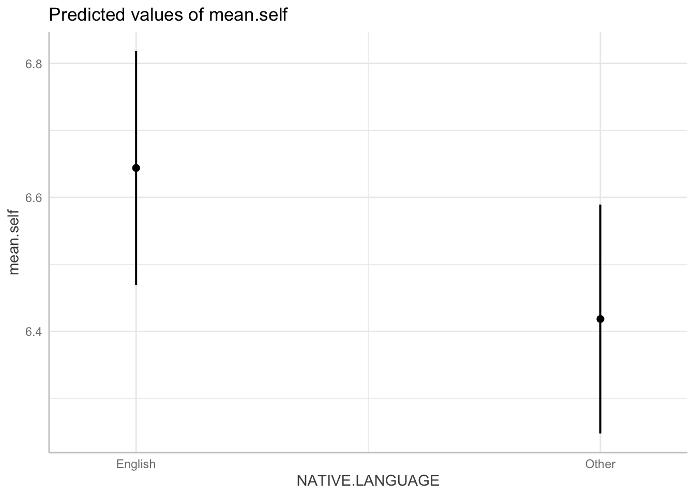
Pract.Q.24. The plot should give you dot-and-whisker representations of the estimated
mean.selfforEnglishversusOtherparticipants in the dataset. What is the difference in the estimatedmean.selfbetween these groups?
Hint: The effect or prediction plot will show you dot-and-whisker representations of predicted outcome mean.self. In these plots, the dots represent the estimated mean.self while the lines (whiskers) represent confidence intervals.
Pract.A.24. The difference in the estimated ‘mean.self’ between these groups is about .2.
Pract.Q.25. Compare the difference in the estimated
mean.selfbetween these groups, given the plot, with the coefficient estimate from the model summary: what do you see?
Pract.A.25. The coefficient estimate = -0.225432. This matches the difference shown in the plot.
10.4.3.7 Practical Part 7: New – examine associations comparing data from different samples
Practical Task 8 – Use facet_wrap() to show how the association between mean.self and mean.acc can vary between the different studies in the data-set
Change the factor in facet_wrap() to show how the association between mean.self and mean.acc can vary between the different studies
Code
all.studies.subjects %>%
ggplot(aes(x = mean.self, y = mean.acc)) +
geom_point(size = 2, alpha = .5, colour = "darkgrey") +
geom_smooth(size = 1.5, colour = "red", method = "lm", se = FALSE) +
xlim(0, 10) +
ylim(0, 1.1)+
theme_bw() +
theme(
axis.text = element_text(size = rel(1.15)),
axis.title = element_text(size = rel(1.5))
) +
xlab("Mean self-rated accuracy") + ylab("Mean accuracy") +
facet_wrap(~ study)`geom_smooth()` using formula = 'y ~ x'Warning: Removed 54 rows containing non-finite outside the scale range
(`stat_smooth()`).Warning: Removed 54 rows containing missing values or values outside the scale range
(`geom_point()`).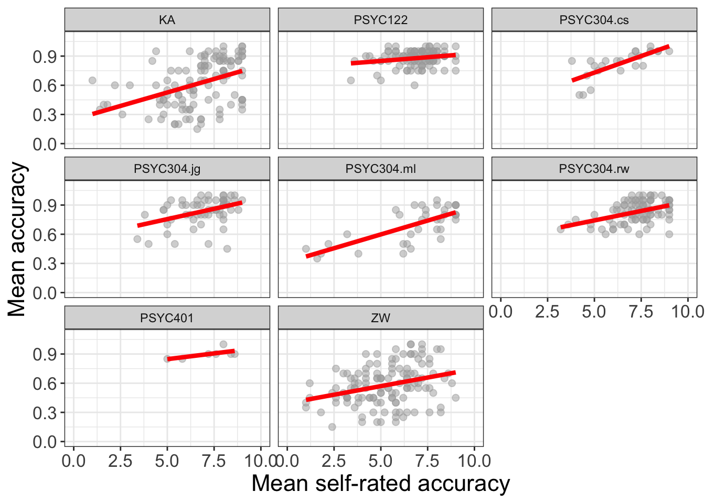
You may need to edit the x-axis labeling to make it readable
- Can you work out how to do that, given
ggplot()help information?
Hint: check out the continuous scale information in:
https://ggplot2.tidyverse.org/reference/scale_continuous.html
10.4.3.8 Practical Part Optional: New – save or export plots so that you can insert them in reports
Learning how to export plots from R will help you later with reports.
The task is to save or export a plot that you produce, so that you can insert it in a report or presentation.
There are different ways to do this, we can look at one simple example.
- We can save the last plot we produce using the
{tidyverse}functionggsave():
ggsave("facet-plots.png")Saving 7 x 5 in image
`geom_smooth()` using formula = 'y ~ x'Warning: Removed 54 rows containing non-finite outside the scale range
(`stat_smooth()`).Warning: Removed 54 rows containing missing values or values outside the scale range
(`geom_point()`).Notice, here, that:
ggsave("facet-plots...")– we need to give the plot a name;ggsave("...png")– and we need to tell R what format we require.
The plot is saved as a file with the name you specify, in the working directory (folder) you are using.
R will save the plot in the format you specify: here, I choose .png because .png image files can be imported into Microsoft Word documents easily.
- Notice that
ggsave()will use pretty good defaults but that you can over-ride the defaults, by adding arguments to specify the plot width, height and resolution (in dpi).
Further information you can explore
Practical Task Optional: Now try it for yourself: make a plot, and save it, using what you have learnt so far
You will need to:
- Fit a model
- Create a set of predictions we can use for plotting
- Make a plot
- Save it
Then, you can import the saved plot into Word.
Code
Fit a model:
model <- lm(mean.acc ~ HLVA + SHIPLEY + FACTOR3 + AGE,
data = all.studies.subjects)Create a set of predictions we can use for plotting
dat <- ggpredict(model, "FACTOR3")Make a plot
p.model <- plot(dat)
p.model +
geom_point(data = all.studies.subjects,
aes(x = FACTOR3, y = mean.acc), size = 1.5, alpha = .75, colour = "darkgrey") +
geom_line(size = 1.5) +
theme_bw() +
theme(
axis.text = element_text(size = rel(1.15)),
axis.title = element_text(size = rel(1.25)),
plot.title = element_text(size = rel(1.4))
) +
xlab("Reading strategy (FACTOR3)") + ylab("Mean accuracy") +
ggtitle("Effect of reading strategy on \n mean comprehension accuracy")Warning: Removed 54 rows containing missing values or values outside the scale range
(`geom_point()`).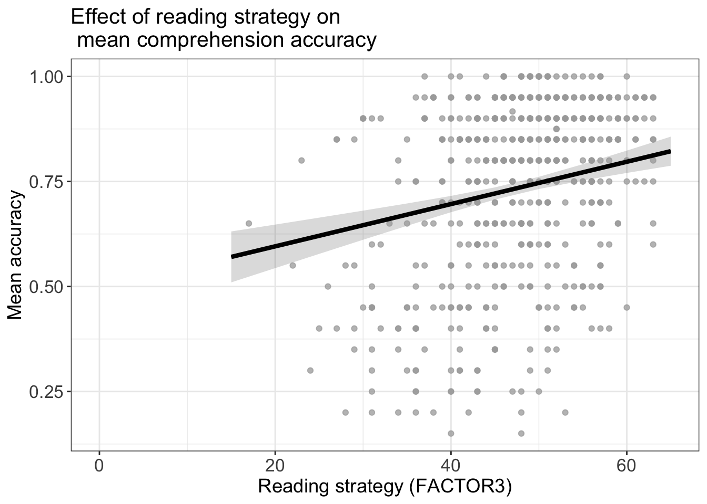
Save it
ggsave("reading-strategy-prediction.png", width = 10, height = 10, units = "cm")Warning: Removed 54 rows containing missing values or values outside the scale range
(`geom_point()`).Some advice:
- It is often helpful to present plots that are almost square i.e. height about = width.
- This helps to present the best fit line in scatterplots in a way that is easier to perceive.
- We may experiment with width-height (aspect ratio) until we get something that “looks” right.
- Notice also that different presentation venues will require different levels if image resolution e.g. journals may require .tiff file plots at dpi = 180 or greater.
The answers
After the practical class, we will reveal the answers that are currently hidden.
The answers version of the webpage will present my answers for questions, and some extra information where that is helpful.
Look ahead: growing in independence
General advice
An old saying goes:
All models are wrong but some are useful
(attributed to George Box).
Tip
- Sometimes, it can be useful to adopt a simpler approach as a way to approximate get closer to better methods
- Box also advises:
Since all models are wrong the scientist must be alert to what is importantly wrong. It is inappropriate to be concerned about mice when there are tigers abroad.
- Here, we focus on validity, measurement, generalizability and critical thinking
Summary
- Linear models
- Linear models are a very general, flexible, and powerful analysis method
- We can use assuming that prediction outcomes (residuals) are normally distributed
- With potentially multiple predictor variables
- Thinking about linear models
- Closing the loop: when we plan an analysis we should try to use contextual information – theory and measurement understanding – to specify our model
- Closing the loop: when we critically evaluate our or others’ findings, we should consider validity, measurement, and generalizability
- Reporting linear models
- When we report an analysis, we should report:
- Explain what I did, specifying the method (linear model), the outcome variable (accuracy) and the predictor variables (health literacy, reading strategy, reading skill and vocabulary)
- Report the model fit statistics overall (\(F, R^2\))
- Report the significant effects (\(\beta, t, p\)) and describe the nature of the effects (does the outcome increase or decrease?)